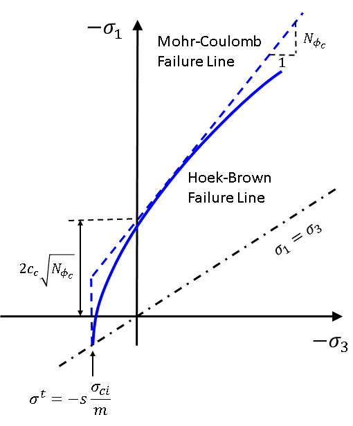

Hoek-Brown 模型
该模型直接由 Mohr-Coulomb 模型（Mohr-Coulomb model） 导出，并且与 Mohr-Coulomb 模型一样，可用 设置安全系数分析参数（model factor-of-safety） 命令进行安全系数计算。
Hoek-Brown-PAC 模型（Hoek-Brown-PAC model） 给出的屈服表示考虑了破坏条件的变化。该模型在高围压状态下表现良好，但在低围压或拉应力状态下可能产生过大剪胀。本节所述的替代版本经修改后纳入拉伸屈服准则，并允许用户把剪胀角作为输入参数指定，以手动控制所发展的剪胀水平。
下面给出公式与算例。
公式
当小主应力 \(\sigma_3\) 为压性时，采用 Hoek-Brown 准则判断塑性屈服。该准则基于大、小主应力 \(\sigma_1\) 与 \(\sigma_3\) 之间的非线性关系，如前述 Hoek-Brown-PAC 模型（Hoek-Brown-PAC model） 所示，此处重述：
其中 \(\sigma_{ci}\) 为完整岩石的无侧限抗压强度，\(m_b\)、\(s\) 与 \(a\) 为材料常数，可与地质强度指标及岩体损伤建立关系（Hoek 等 2002）。
对 \(\sigma_3\) 拉应力区，Hoek-Brown 包络由 Mohr-Coulomb 包络（在 \(\sigma_3 = 0\) 处与 Hoek-Brown 相切）与 \(\sigma_3 = -s \sigma_{ci} / m_b\) 处的拉伸截断组合扩展而成。
Hoek-Brown 模型的数值实现采用线性近似（见 图 1（Figure 1）），即用当前应力水平 \(\sigma_3\) 处的 Mohr-Coulomb 切线不断逼近非线性破坏面。当前切线 Mohr-Coulomb 准则为
其中


图 1：Hoek-Brown 破坏准则及其 Mohr-Coulomb 近似。
黏聚力 \(c_c\) 与摩擦 \(\phi_c\) 的当前（表观）值用下式计算
其中
逻辑中通过考虑公式 (6) 与 (7) 中的以下帽盖，计入拉伸 \(\sigma_3\) 区域的 Mohr-Coulomb 包络扩展（注意压应力为正）：
..拉伸屈服逻辑与 应变软化/硬化 Mohr-Coulomb 模型（strain-softening/hardening Mohr-Coulomb model） 所用相同。
剪切屈服的塑性应变增量用当前 Mohr-Coulomb 流动法则定义：
其中 \(\Delta e^p\) 为塑性流动增量强度，\(g\) 为塑性势函数，且
塑性势函数为
其中 \(\psi_c\) 为剪胀的当前值，且
塑性流动方向（公式 (9) 中的 \({\partial g \over \partial \sigma_{ij}}\)）用塑性势函数表示。塑性流动增量强度 \(\Delta e^p\) 由当前切线 Mohr-Coulomb 屈服准则（公式 (9)）导出。模型有三种流动法则可选：
- 输入由性质关键字 constant-dilation 与 flag-dilation = 0 指定的剪胀角（\(\psi_c\) 为常数）。
- 通过设置 flag-dilation = -1 指定关联塑性流动（\(\psi_c\) 设为等于 \(\phi_c\)）。
- 把剪胀设为摩擦角的某一比例（\(\psi_c\) 设为常数乘以 \(\phi_c\)）；flag-dilation 为一个正比例系数。
可为 Hoek-Brown 性质 \(m_b\)、\(s\)、\(a\) 与 \(\sigma_{ci}\) 规定应变硬化/软化行为。输入通过表格给出，以演化参数表示。演化参数有两种选择：塑性剪应变（性质关键字 flag-evolution 设为 1，仅在发生剪切屈服时累积），或沿压性最小主应力方向的塑性应变 \(\sigma_3\)（性质关键字 flag-evolution 设为 0）。演化参数可通过性质 strain-plastic 监测。
可选择一种简单的正则化技术来解决软化行为的网格依赖问题。要启用该技术，把用于以试验数据标定模型性质的网格单元尺寸赋给 length-calibration 性质。该性质即标定长度。随后自动调整输入的软化速率，以计入完整 FLAC3D 或 3DEC 模型中所用的不同网格单元尺寸。注意该技术属试验性，使用时需谨慎。
参考文献
Hoek, E., and E. T. Brown.《岩体强度的实用估算法》，Int. J. Rock Mech. Min. Sci.，34（8），1165-1186（1998）。
Hoek, E., and E. T. Brown. 《岩石中的地下开挖》。London: IMM（1980）。
Hoek, E., C. Carranza-Torres and B. Corkum.《Hoek-Brown 破坏准则——2002 年版》，载 《NARMS-TAC 2002 会议论文集：第 5 届北美岩石力学研讨会与第 17 届加拿大隧道协会会议——加拿大多伦多——2002 年 7 月 7 日至 10 日》。第 1 卷，第 267-271 页。R. Hammah 等编。Toronto: University of Toronto Press（2002）。
hoek-brown 模型性质
用以下关键字配合 设置网格单元属性（zone property） 命令设置 Hoek-Brown 模型的这些性质。
- hoek-brown
- bulk f
体积模量，\(K\)
- constant-a f
Hoek-Brown 参数 \(a\)
- constant-mb f
Hoek-Brown 参数 \(m_b\)
- constant-s f
Hoek-Brown 参数 \(s\)
- constant-sci f
Hoek-Brown 参数 \(\sigma_{ci}\)
- current-a f
\(a_c\) 的当前值
- current-mb f
\(m_{b,c}\) 的当前值
- current-s f
\(s_c\) 的当前值
- current-sci f
\(\sigma_{ci,c}\) 的当前值
- poisson f
泊松比，\(\nu\)
- shear f
剪切模量 \(G\)
- young f
杨氏模量，\(E\)
- flag-brittle b (a)
若为真，则在发生拉伸破坏时把拉伸极限设为 0。默认为 false。
- flag-dilation f (a)
= 0（默认标志），以输入由 constant-dilation 指定的常数剪胀角
= -1，用于指定关联塑性流动 \(\psi_c\) = \(\phi_c\)
= k，其中 k 为摩擦角 \(\phi_c\) 的某一比例，使 \(\psi_c\) = \(k \times \psi_c\)
- flag-fos i (a)
= 0（默认标志），表示 设置安全系数分析参数（
model factor-of-safety） 解由抗剪强度控制= 1，表示 设置安全系数分析参数（
model factor-of-safety） 解由无侧限抗压强度控制
- table-a s (a)
把 \(a\) 与演化参数关联的表格名称。
- table-m s (a)
把 \(m_b\) 与演化参数关联的表格名称。
- table-multiplier s (a)
把乘子与 \(\sigma_3\) 关联的表格名称。
- table-s s (a)
把 \(s\) 与演化参数关联的表格名称。
- table-sci s (a)
把 \(\sigma_{ci}\) 与演化参数关联的表格名称。
- table-tension s (a)
把 \(\sigma^t\) 与塑性拉应变关联的表格名称。
- cohesion f (r)
黏聚力的当前值 \(c_c\)
- dilation f (r)
剪胀角的当前值 \(\psi_c\)，任何情况下该值都不大于当前摩擦角。
- friction f (r)
摩擦角的当前值 \(\phi_c\)
- strain-plastic f (r)
沿压性最小主应力方向的塑性应变（若 flag-evolution = 0），或塑性剪应变（若 flag-evolution = 1）
图例
- (a) 高级属性。
- 该属性具有默认值；在较简单的模型应用中，无需专门赋值。
- (r) 只读属性。
- 该属性不能由用户设置，但可以列出、绘图显示，或通过 FISH 访问。
注意事项
- 定义弹性只需两种选项之一：体积模量 \(K\) 与剪切模量 \(G\)，或杨氏模量 \(E\) 与泊松比 \(\nu\)。选择后者时，必须先赋予杨氏模量 \(E\) 再赋予泊松比 \(\nu\)。
- 抗拉截断为 \({\sigma}^t = min({\sigma}^t, c/\tan \phi)\)。
- (\(a\), \(m_b\), \(s\), \(\sigma_{sci}\)) 有两组参数：一组称为 constant 组，即首次赋给后保持常数的值；另一组称为 current 组，自动初始化为与 constant 组相同的值，但若涉及参数演化/更新，此后可用表格或 FISH 函数更新；否则 current 组仅可用于输出。
- 拉伸表与 flag-brittle 不应同时处于活动状态。
| 这些内容对您有帮助吗？… 版权与免责声明 | FLAC3D © 2019, Itasca | 原文更新于 2020 年 10 月 8 日 |